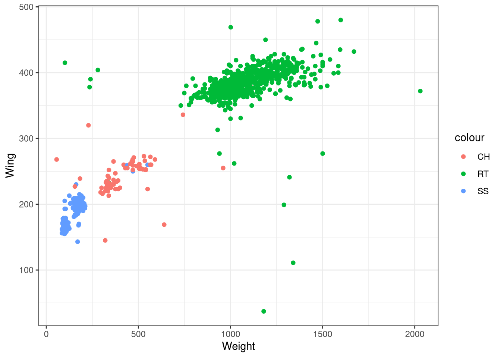
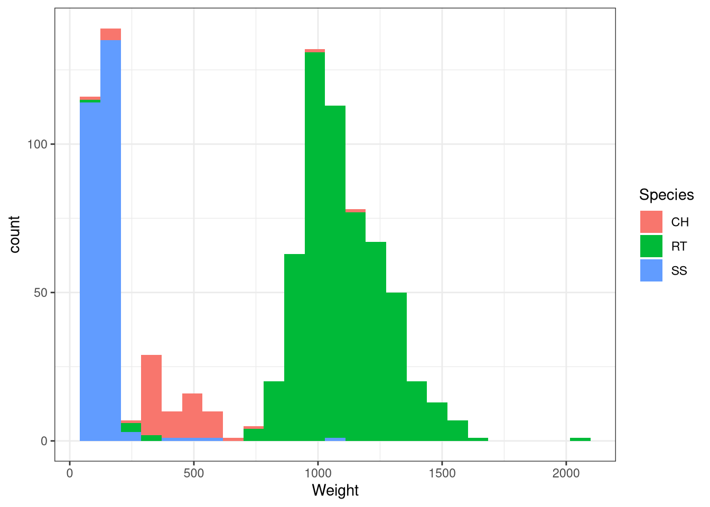
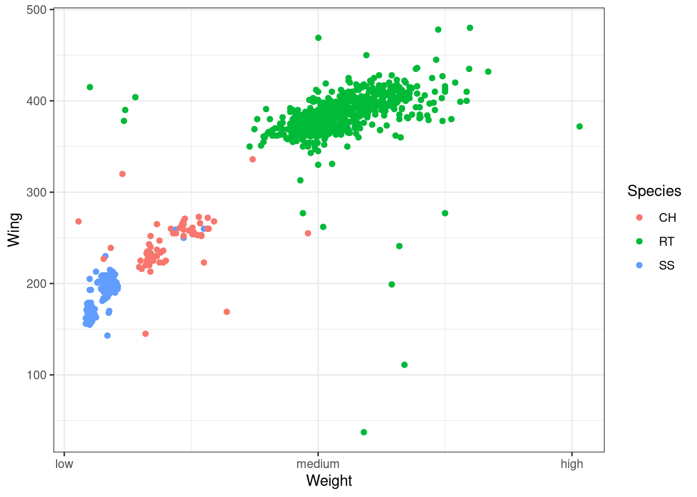

Code
install.packages("ggplot2")
devtools::install_github("statmanrobin/Stat2Data")
library(ggplot2)
library(Stat2Data)
data("Hawks")Learn how to customize the aesthetics, labels and axes of a graph in ggplot2.
After Chapter 1 you must be familiar with the different types of graphs that you can plot using ggplot2. So for this tutorial, we will be learning how to customize those ggplot graphs to our liking. We will learn how to tweak the aesthetics, how to change labels and how to modify and change the axes in a graph.
So let us plot a graph from scratch and learn how to use different aesthetics available.
First, we need to install the ggplot2 package in R as it does not come in the standard distribution of R. For the dataset, we will first download the Stat2Data package which houses a lot of cool datasets. For this tutorial let us use the Hawks dataset which showcases body measurements from three different species of Hawks. This data was collected by students and faculty at Cornell College in Mount Vernon and the dataset was made available by late Prof. Bob Black at Cornell College.
install.packages() and to load packages we use the command library(). Therefore to install and load ggplot2 and {Stats2Data} packages we use the following lines of command. Call the Hawks data using the data() command.install.packages("ggplot2")
devtools::install_github("statmanrobin/Stat2Data")
library(ggplot2)
library(Stat2Data)
data("Hawks")str() command'data.frame': 908 obs. of 19 variables:
$ Month : int 9 9 9 9 9 9 9 9 9 9 ...
$ Day : int 19 22 23 23 27 28 28 29 29 30 ...
$ Year : int 1992 1992 1992 1992 1992 1992 1992 1992 1992 1992 ...
$ CaptureTime : Factor w/ 308 levels " ","1:15","1:31",..: 181 25 138 42 62 71 181 88 261 192 ...
$ ReleaseTime : Factor w/ 60 levels ""," ","10:20",..: 1 2 2 2 2 2 2 2 2 2 ...
$ BandNumber : Factor w/ 907 levels " ","1142-09240",..: 856 857 858 809 437 280 859 860 861 281 ...
$ Species : Factor w/ 3 levels "CH","RT","SS": 2 2 2 1 3 2 2 2 2 2 ...
$ Age : Factor w/ 2 levels "A","I": 2 2 2 2 2 2 2 1 1 2 ...
$ Sex : Factor w/ 3 levels "","F","M": 1 1 1 2 2 1 1 1 1 1 ...
$ Wing : num 385 376 381 265 205 412 370 375 412 405 ...
$ Weight : int 920 930 990 470 170 1090 960 855 1210 1120 ...
$ Culmen : num 25.7 NA 26.7 18.7 12.5 28.5 25.3 27.2 29.3 26 ...
$ Hallux : num 30.1 NA 31.3 23.5 14.3 32.2 30.1 30 31.3 30.2 ...
$ Tail : int 219 221 235 220 157 230 212 243 210 238 ...
$ StandardTail: int NA NA NA NA NA NA NA NA NA NA ...
$ Tarsus : num NA NA NA NA NA NA NA NA NA NA ...
$ WingPitFat : int NA NA NA NA NA NA NA NA NA NA ...
$ KeelFat : num NA NA NA NA NA NA NA NA NA NA ...
$ Crop : num NA NA NA NA NA NA NA NA NA NA ...So there is a lot of information in the dataset which we can use for plotting. So let us try plotting them.
One thing to remember here is that how ggplot2 builds a graph is by adding layers. Let us start by plotting the basic layer first where the x-axis shows ‘weight of the hawks’ and the y-axis shows ‘wingspan of the hawks’.
Wait a sec! Where are my data points? So right now if we look at the syntax of the ggplot code we can see that we have not told ggplot2 which geometry we want. Do we want a scatter plot or a histogram or any other type of graph? So let us plot a scatter plot first. Use geom_point() command. By adding geom_point() to the ggplot() command is equivalent to adding an extra layer to the already existing layer that we got previously. Let us also use theme_bw() for a nice looking theme.

We got the graph! but we also got a warning message. The warning message tells us that the dataset which we had used to plot the graph had 11 rows of NA values and which could not be plotted into the graph. In real-life cases, we can have datasets with NA values due to various reasons, so this is fine.
Now, this graph even though shows us data points we are not sure which point belongs to which species, as this dataset contains data for three species of Hawks. So let us try giving different colours to the points concerning the different species so that we are able to differentiate them.
colour = Species within the aes() of the ggplot command. I use the general term ‘element’ here to emphasize that the same change in aesthetics will work for most of other types of geometries in ggplot2 (something which you have seen extensively in Chapter 1. Like for a line graph, the ‘element’ would be lines, here our ‘element’ is point.
The species abbreviations are the following: CH=Cooper’s, RT=Red-tailed, SS=Sharp-Shinned.
Now, this graph is way better than the previous one.

Now we did change the shape of points but it is still hard to make out the difference. Let us try specifying colour along with the shape
colour and shape in aesthetics
This plot is much better than the previous one.
Now let us try specifying colour within the aes() of the geom()

We got the same graph as before! So what is the difference in specifying colour within aes() of ggplot() compared to the same but within geom(). Let us look at another example.

I manually changed the colour of the points to red colour. Now let try specifying colour to the aes() within the geom()

You can see that the red colour is overridden by other colours. So the aes() mapping (in this case colour) within geom() will override any aes() mapping within ggplot(). And whatever aes() mapping we give within ggplot() will be inherited by all geom() layers that will be added along with the ggplot() layer.
Let us see another case.


If you compare both the codes, the only difference is that the colour = "darkred" command was outside aes() in the first code and inside aes() in the second code. So why didn’t the second graph have the same dark-red coloured points as the first one? The reason is that in the first code we are explicitly told to have all data points to be coloured dark-red but that is not the case with the second code. In the second code, since we have specified it inside aes(), ggplot is trying to look for a variable called “darkred” inside the dataset and colour it accordingly. This is why the legend that appears in the second graph has listed “darkred” as a category. And ggplot fails to find the variable called “darkred” but it still recognizes the colour command line and colour all the points in red. So the bottom line is that R has a pre-determined way of reading a code, so we users should well-understand what each line is expected to do and should not expect R to just fill it in accordingly to what we write.
Now let us try a few other examples;
scale_shape_manual() for changing shape, similarly scale_color_manual() for changing colour and scale_size_manual() for changing size of the element.library(ggplot2)
library(Stat2Data)
ggplot(data = Hawks, aes(x = Weight, y = Hallux, colour = Species,
shape = Species, size = Species)) +
geom_point() +
scale_shape_manual(values=c(1, 2, 3)) +
scale_color_manual(values=c('red','blue', 'green')) +
scale_size_manual(values=c(1,5,10)) + theme_bw()

alpha() within the geom() with a numeric value to change the opacity of the elements. This is useful for visualizing large datasets such as this.
The same commands also work for most of the other types of geom(). Now let us see a few other aesthetics in other types of geoms.

scale_fill_manual() to manually change the colours.library(ggplot2)
library(Stat2Data)
ggplot(data = Hawks, aes(x = Weight, fill = Species)) +
geom_histogram(bins = 25) + theme_bw() +
scale_fill_manual(values = c("darkred", "darkblue", "darkgreen"))
linetype in aes()

scale_linetype_manual()


Now let us also see how to change the labels in a graph.
xlab() to change x-axis title, ylab() to change y-axis title, ggtitle() with label and subtitle to add title and subtitle respectively.library(ggplot2)
library(Stat2Data)
ggplot(data = Hawks, aes(x = Weight, y = Wing, colour = Species)) +
geom_point() + theme_bw() + xlab("Weight (gm)") + ylab("Wing (mm)") +
ggtitle(label = "Weight vs Wing span in three different species of Hawks",
subtitle = "CH=Cooper's, RT=Red-tailed, SS=Sharp-Shinned")
labs() to specify each label in the graph. For renaming the legend title, the command will depend on what is there within the aes() or in other words what is the legend based on.library(ggplot2)
library(Stat2Data)
ggplot(data = Hawks, aes(x = Weight, y = Wing, colour = Species)) +
geom_point() + theme_bw() + labs(x = "Weight (gm)", y = "Wing (mm)",
title= "Weight vs Wing span in three different species of Hawks",
subtitle = "CH=Cooper's, RT=Red-tailed, SS=Sharp-Shinned",
caption = "Source: Hawk dataset from Stat2Data r-package", #caption for the graph
colour = "Hawk Species", # rename legend title
tag = "A") #figure tag

coord_cartesian() to zoom in on a particular area in the graph
coord_flip() to flip the x and y axes.library(ggplot2)
library(Stat2Data)
ggplot(data = Hawks, aes(x = Weight, y = Wing, colour = Species)) +
geom_point() + theme_bw() + coord_flip()
scale_x_continuous() for tweaking the x-axis. The same command work for the y-axis also. You can include label() inside the command to manually label the breaks of the axes.library(ggplot2)
library(Stat2Data)
ggplot(data = Hawks, aes(x = Weight, y = Wing, colour = Species)) +
geom_point() + theme_bw() + scale_x_continuous(breaks = c(0,1000,2000))

scale_y_reverse() to display the y values in the descending order. Same command applies to x-axis also.library(ggplot2)
library(Stat2Data)
ggplot(data = Hawks, aes(x = Weight, y = Wing, colour = Species)) +
geom_point() + theme_bw() + scale_y_reverse()
In this tutorial, we learned how to modify aesthetic present for different geoms in ggplot2 Then we learned how to modify labels in a graph and finally, we learned how to modify and change the axes elements. This tutorial is in no way exhaustive of the different ways you can modify a graph as there many more methods which are not discussed here. Instead of trying to include everything, this tutorial tries to be a stepping stone to help students of R to learn the basics of tweaking a graph. Try to practice what is covered here using other datasets available in the r-package Stat2Data. Have a good day my friend!
H. Wickham. ggplot2: Elegant Graphics for Data Analysis. Springer-Verlag New York, 2016. Read more about ggplot2 here. You can also look at the cheat sheet for all the syntax used in ggplot2. Also check this out.
Ann Cannon, George Cobb, Bradley Hartlaub, Julie Legler, Robin Lock, Thomas Moore, Allan Rossman and Jeffrey Witmer (2019). Stat2Data: Datasets for Stat2. R package version 2.0.0. https://CRAN.R-project.org/package=Stat2Data
[1] "2022-05-20 15:08:50 IST"@online{johnson2021,
author = {Jewel Johnson},
title = {Chapter 2: {Customizing} Graphs in Ggplot2},
date = {12/04/2021},
langid = {en}
}